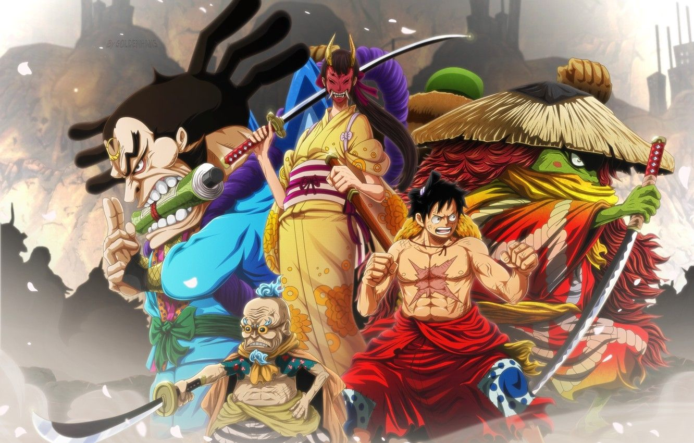

Best Arcs

Wano Arc
Wano's tragic tale is one that gradually reveals itself to the Straw Hats and viewers alike. Luffy first encounters this tragedy through the eyes of Otama, who despite not having eaten for weeks, offers her hard-earned food to him
Know More
Marine Ford Arc
Ace was to be executed. With careful planning from Sengoku, the siege wall plan was set up to surround the pirates while Admiral Akainu melted the frozen ice floor created by Admiral Aokiji, in an attempt to destroy the crew and their subordinate crews, as well as Luffy and his recruits from Impel Down.
Know More